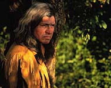
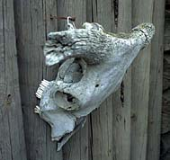
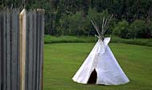

|
Aboriginal History
 Twenty thousand years ago, the first aboriginals inhabited Saskatchewan, after crossing a land bridge which had emerged between present day Alaska and eastern Asia. Find out how these industrious and adaptive people hunted and survived in the harsh prairie climate without horses, houses, or the technologies we now consider necessities.
Chronology of Saskatchewan's Early History Time travel through Saskatchewan as you discover the secrets of our unpredictable past.
|
|
|
European Settlement
 In search of fame, fortune and freedom, or a better life for their families, Europeans sailed westward to the new land. Some came to exploit, but most came to build. Explore the triumphs and tragedies of those who made the sacrifices which created the modern society that most people enjoy today. 
|